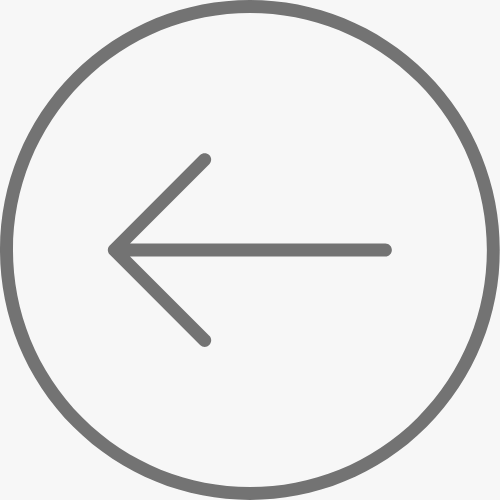

THE HUMANS
Project Type
Microdocumentary
Tools Used
Canon C100, Sony Wireless Lavs, Directional Shotgun Mic, iMovie
Role
Producer, Director, Editor
Year
2022
As assistant stage manager for James Madison University's production of The Humans by Stephen Karam, I was tasked with creating a sort of micro-documentary piece to inform students about the play and why it was chosen as a part of the mainstage season.
Through attending rehearsals and speaking with the director, this piece became about the benefits of embodying otherness in theater.